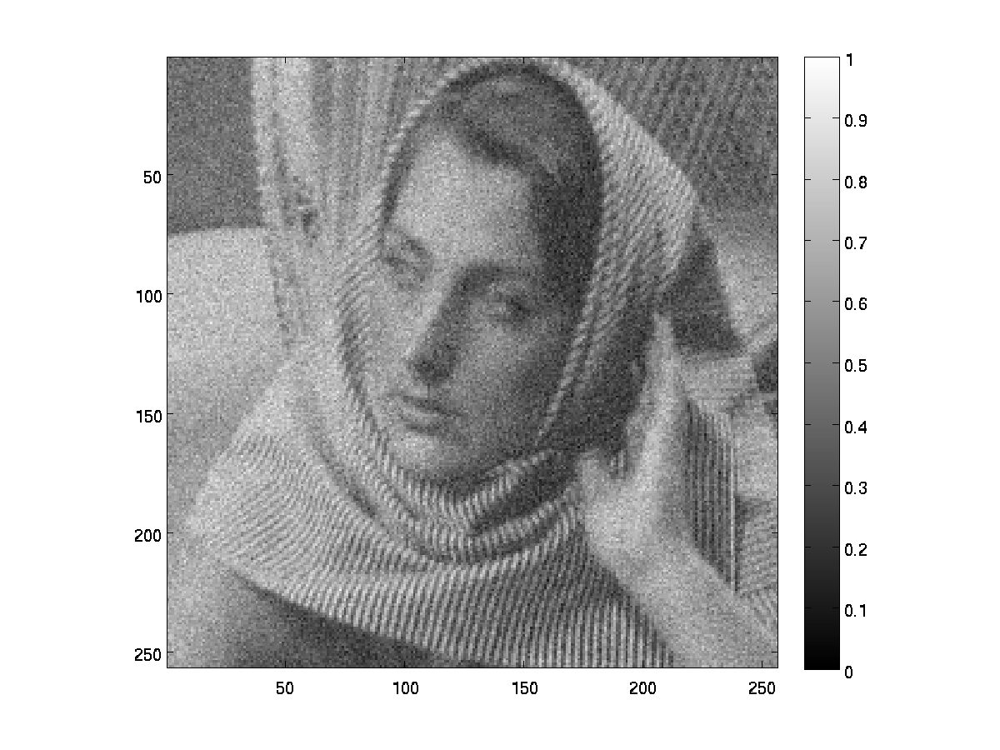

Digital Image Processing - Assignment 4
Team Members
- Mayank Meghwanshi - 110050012
- Vivek Atulkar - 110050039
PCA
-
-
a
Sigma : 20
Patch : 7x7
RMSD : 0.0721
Original Image

Noisy Image
Reconstructed
-
b
Sigma : 20
Patch : 7x7
Window : 31x31
K-neighbour : 200
RMSD : 0.0744
Original Image
Noisy Image
Reconstructed
-
Bilateral
RMSD : 0.1264
Bilateral Image
Bilateral is local whereas PCA takes non local means. PCA is similar to patch based filter.